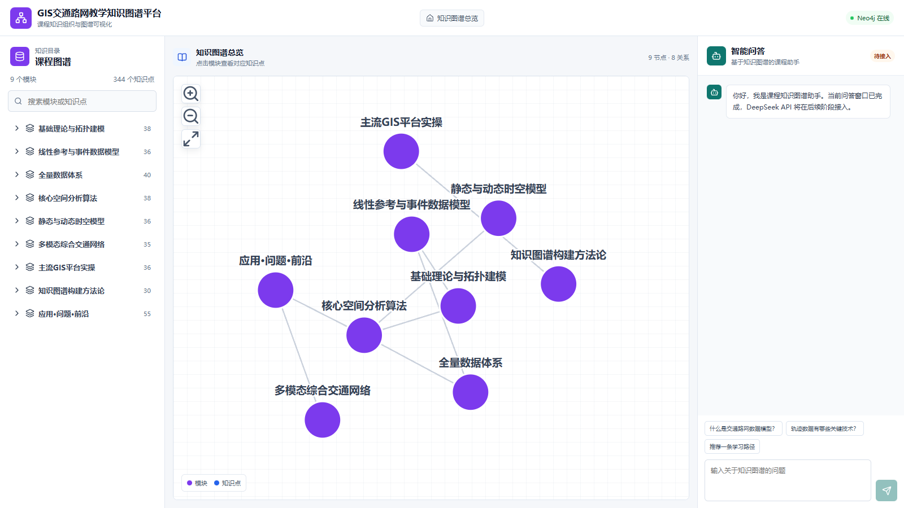
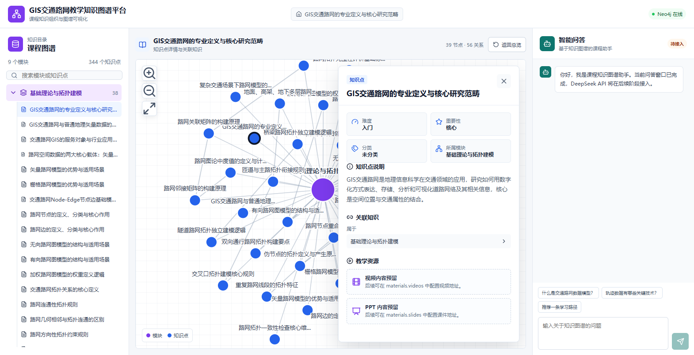
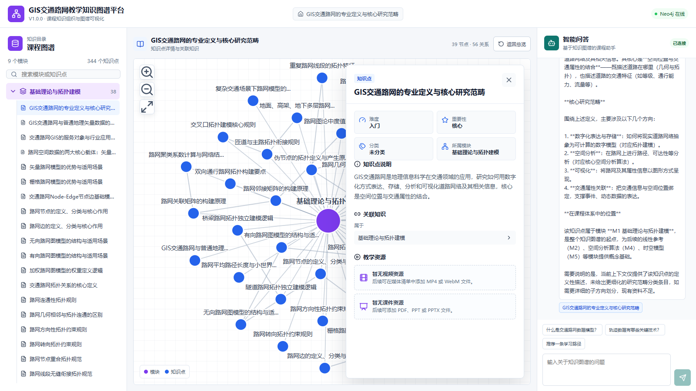
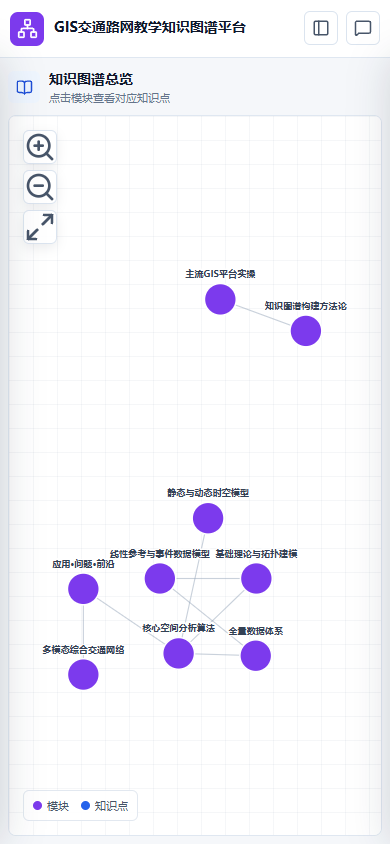

界面截图





软件著作权说明材料
| 项目 | 内容 |
|---|---|
| 正式名称 | GIS交通路网教学知识图谱平台 |
| 正式简称 | GIS知识图谱平台 |
| 版本号 | V1.0 |
| 内部项目名 | gis-knowledge-platform |
| 软件类型 | 教学知识图谱可视化 Web 平台 |
本软件面向 GIS 交通路网相关课程，提供知识图谱目录浏览、模块与知识点可视化、 知识点详情展示、教学资源扩展和智能问答扩展能力。
| 层级 | 技术 |
|---|---|
| 前端 | Vue 3、Vite、Axios、D3.js |
| 后端 | Python、FastAPI、Neo4j Python Driver |
| 数据库 | Neo4j |
| 智能问答 | DeepSeek API，通过本地环境变量配置启用 |
以下位置必须使用统一名称和版本：
package.json。V1.0 的核心功能定位为：
| 项目 | 内容 |
|---|---|
| 软件名称 | GIS交通路网教学知识图谱平台 |
| 软件版本 | V1.0 |
| 软件类型 | 教学知识图谱可视化 Web 平台 |
| 后端技术 | Python 3.12、FastAPI |
| 前端技术 | Vue 3、Vite、D3.js、Axios |
| 数据库 | Neo4j 5.x |
| 智能问答 | DeepSeek API |
本软件面向 GIS 交通路网课程教学，将模块、知识点、前置关系、相关关系、 工具关系等内容组织为知识图谱，并通过网页提供目录浏览、图谱可视化、 知识点详情、媒体资源和智能问答能力。
系统采用前后端分离架构：
浏览器
├── Vue 3 页面
├── D3.js 知识图谱
└── Axios API 客户端
│
▼
FastAPI 后端
├── 目录与图谱接口
├── 知识点详情接口
├── 媒体访问
├── 搜索服务
└── DeepSeek 图谱问答服务
│
▼
Neo4j 知识图谱数据库前端负责页面布局和交互，后端负责数据查询、业务聚合和外部 AI 服务调用， Neo4j 负责保存教学知识图谱。
网页采用三栏式布局：
| 区域 | 功能 |
|---|---|
| 左侧 | 完整知识目录、模块折叠和知识点选择 |
| 中间 | 模块总览、知识点子图和详情面板 |
| 右侧 | DeepSeek 智能问答和关联知识点引用 |
| 组件 | 主要职责 |
|---|---|
App.vue |
页面状态、接口调用、模块和知识点联动 |
DirectoryPanel.vue |
知识目录、目录搜索和知识点选择 |
KnowledgeGraph.vue |
D3 力导向图、缩放、拖拽和节点点击 |
KnowledgeDetail.vue |
知识点属性、关联知识和教学媒体 |
ChatPanel.vue |
问答消息、配置状态和引用节点 |
api/client.js |
Axios 实例、基础地址和请求超时 |
constants/graph.js |
节点颜色、类型和关系统一名称 |
页面使用三个主要状态：
backend/main.py 负责：
backend/config.py 从 backend/.env 读取：
密钥和密码不写入前端代码，也不提交到源码仓库。
backend/deepseek_service.py 负责：
模型不能直接生成并执行 Cypher。
系统使用属性图模型：
(KnowledgePoint)-[:BELONGS_TO]->(Module)
(KnowledgePoint)-[:PREREQUISITE_OF]->(KnowledgePoint)
(KnowledgePoint)-[:RELATED_TO]->(KnowledgePoint)
(Module)-[:PREREQUISITE_MODULE]->(Module)
(KnowledgePoint)-[:HAS_MEDIA]->(Media)节点业务主键：
| 标签 | 主键 |
|---|---|
| Module | module_id |
| KnowledgePoint | kp_id |
| Tool | tool_id |
| Media | media_id |
详细字段和关系统计见 02-database-design.md。
HAS_MEDIA。| 场景 | 处理方式 |
|---|---|
| Neo4j 不可用 | 健康检查返回 HTTP 503 |
| 知识点不存在 | 返回 HTTP 404 |
| DeepSeek 未配置 | 返回 HTTP 503 |
| DeepSeek 超时或服务异常 | 返回 HTTP 502 |
| 图谱为空 | 前端显示空状态 |
| 媒体为空 | 显示资源待添加状态 |
开发阶段：
Vite 5173 -> FastAPI 8000 -> Neo4j 7687生产阶段建议：
Nginx
├── 静态前端文件
└── /api 反向代理
│
▼
Uvicorn/FastAPI
│
▼
Neo4j| 项目 | 内容 |
|---|---|
| 软件名称 | GIS交通路网教学知识图谱平台 |
| 软件版本 | V1.0 |
| 数据库类型 | Neo4j |
| 数据库版本 | 5.26.30 |
| 数据快照日期 | 2026-09-20 |
系统使用属性图模型存储教学知识内容。节点表示模块、知识点和工具， 关系表示知识点归属、前置依赖、相关内容、组成部分、应用关系以及工具实现关系。
数据库快照包含：
| 数据类型 | 数量 |
|---|---|
| 模块节点 | 9 |
| 知识点节点 | 344 |
| 工具节点 | 10 |
| 媒体节点 | 0 |
| 关系 | 1016 |
| 节点总数 | 363 |
模块表示课程章节或教学主题。
| 属性 | 类型 | 说明 |
|---|---|---|
module_id |
字符串 | 模块业务主键，例如 M1 |
name |
字符串 | 模块名称 |
knowledge_count |
整数 | 模块知识点数量 |
sort_order |
整数 | 页面排序序号 |
order |
整数 | 兼容排序字段，仅部分节点存在 |
唯一性约束：module_id。
知识点表示模块中的具体教学内容。
| 属性 | 类型 | 说明 |
|---|---|---|
kp_id |
字符串 | 知识点业务主键，例如 M1-001 |
name |
字符串 | 知识点名称 |
description |
字符串 | 知识点说明 |
difficulty |
字符串 | 难度等级 |
importance |
字符串 | 重要性等级 |
subcategory |
字符串 | 分类名称 |
sort_order |
整数 | 模块内排序序号 |
唯一性约束：kp_id。
工具节点用于表示 GIS 平台、软件或技术工具。
| 属性 | 类型 | 说明 |
|---|---|---|
tool_id |
字符串 | 工具业务主键 |
name |
字符串 | 工具名称 |
category |
字符串 | 工具类别 |
vendor |
字符串 | 开发厂商或提供方 |
唯一性约束：tool_id。
媒体节点用于保存视频和 PPT 课件的元数据，文件本体存放在后端媒体目录。
| 属性 | 类型 | 说明 |
|---|---|---|
media_id |
字符串 | 媒体唯一标识 |
type |
字符串 | video 或 slides |
title |
字符串 | 资源标题 |
format |
字符串 | mp4、webm、pdf、ppt 或 pptx |
url |
字符串 | 浏览器访问地址 |
cover_url |
字符串 | 视频封面地址，可选 |
order |
整数 | 显示顺序 |
唯一性约束：media_id。
| 关系类型 | 起点 | 终点 | 数量 | 含义 |
|---|---|---|---|---|
BELONGS_TO |
KnowledgePoint | Module | 344 | 知识点属于模块 |
PREREQUISITE_OF |
KnowledgePoint | KnowledgePoint | 86 | 前置知识点 |
RELATED_TO |
KnowledgePoint | KnowledgePoint | 41 | 相关知识 |
PART_OF |
KnowledgePoint | KnowledgePoint | 28 | 组成部分 |
APPLIED_IN |
KnowledgePoint | KnowledgePoint | 42 | 应用于 |
IMPLEMENTED_IN |
KnowledgePoint | Tool | 11 | 通过工具实现 |
PREREQUISITE_MODULE |
Module | Module | 5 | 模块前置关系 |
SUPPORTS |
Module | Module | 3 | 模块支撑关系 |
HAS_MEDIA |
KnowledgePoint | Media | 0 | 知识点关联媒体资源 |
所有关系均有明确方向。当前关系没有业务属性。
data/schema.cypher 定义以下结构：
Module.module_id 唯一性约束。KnowledgePoint.kp_id 唯一性约束。Tool.tool_id 唯一性约束。Media.media_id 唯一性约束。| 文件 | 用途 |
|---|---|
data/graph-snapshot.json |
完整节点和关系快照 |
data/schema.cypher |
约束与索引 |
data/modules.cypher |
模块节点导入 |
data/knowledge-points.cypher |
知识点节点导入 |
data/tools.cypher |
工具节点导入 |
data/media.cypher |
媒体节点导入 |
data/relationships.cypher |
关系导入 |
scripts/export_graph.py |
从 Neo4j 重新生成全部数据文件 |
在空白 Neo4j 数据库中依次执行：
data/schema.cypherdata/modules.cypherdata/knowledge-points.cypherdata/tools.cypherdata/media.cypherdata/relationships.cypher节点和关系导入均使用 MERGE，可以重复执行，不会因为重复导入而创建重复数据。
所有业务接口使用 /api 前缀，默认返回 JSON。
通用成功格式：
{
"code": 200,
"message": "操作成功",
"data": {}
}问答接口成功时直接返回答案：
{
"code": 200,
"message": "问答成功",
"answer": "回答内容",
"references": [],
"model": "deepseek-chat"
}错误使用标准 HTTP 状态码：
| 状态码 | 含义 |
|---|---|
| 200 | 成功 |
| 404 | 资源不存在 |
| 429 | 提问过于频繁 |
| 422 | 请求参数错误 |
| 502 | DeepSeek 上游异常 |
| 503 | 数据库或 AI 服务未就绪 |
GET /api/health检查 FastAPI 服务和 Neo4j 连接。
响应：
{
"status": "ok",
"message": "后端服务正常",
"database": "connected"
}GET /api/graph/modules返回模块节点和模块间关系。
响应数据：
{
"nodes": [],
"links": [],
"summary": {
"moduleCount": 9,
"knowledgePointCount": null,
"relationCount": 8
}
}节点格式：
{
"id": "M1",
"elementId": "...",
"labels": ["Module"],
"properties": {
"module_id": "M1",
"name": "基础理论与拓扑建模"
}
}关系格式：
{
"id": "...",
"type": "PREREQUISITE_MODULE",
"source": "M1",
"target": "M2",
"properties": {}
}GET /api/directory一次返回九个模块和各模块的知识点目录，数据量较小，不返回完整描述。
响应数据：
{
"modules": [
{
"id": "M1",
"name": "基础理论与拓扑建模",
"properties": {},
"knowledgePoints": [
{
"id": "M1-001",
"name": "GIS交通路网的专业定义与核心研究范畴",
"properties": {}
}
]
}
]
}GET /api/modules/{module_id}/graph查询参数：
| 参数 | 类型 | 必填 | 说明 |
|---|---|---|---|
module_id |
路径参数 | 是 | 模块业务主键 |
internal_relation_limit |
查询参数 | 否 | 模块内关系上限，默认 800 |
返回模块、模块下全部知识点、BELONGS_TO 关系和知识点内部关系。
不存在的模块返回 HTTP 404。
GET /api/knowledge-points/{knowledge_point_id}返回：
示例：
{
"node": {
"id": "M1-001",
"labels": ["KnowledgePoint"],
"properties": {
"name": "GIS交通路网的专业定义与核心研究范畴",
"description": "...",
"difficulty": "入门",
"importance": "核心"
}
},
"module": {
"id": "M1",
"labels": ["Module"],
"properties": {
"name": "基础理论与拓扑建模"
}
},
"relations": [],
"materials": {
"videos": [],
"slides": []
}
}GET /api/search查询参数：
| 参数 | 类型 | 默认值 | 说明 |
|---|---|---|---|
keyword |
字符串 | 无 | 搜索关键词，长度 1 至 100 |
limit |
整数 | 20 | 返回数量，范围 1 至 50 |
搜索模块和知识点的名称及描述。
GET /api/chat/status响应：
{
"configured": true,
"model": "deepseek-chat",
"message": "DeepSeek API 已配置"
}该接口不返回 API Key。
POST /api/chat请求：
{
"question": "什么是交通路网数据模型？",
"module_id": "M1",
"knowledge_point_id": "M1-001"
}参数约束：
| 参数 | 必填 | 最大长度 |
|---|---|---|
question |
是 | 500 |
module_id |
否 | 50 |
knowledge_point_id |
否 | 50 |
处理流程：
GET /media/{path}由 FastAPI 静态文件服务提供。
支持：
/media/videos/*/media/slides/*/media/covers/*真实文件默认不进入源码仓库。
确认 Neo4j 服务已启动：
bolt://localhost:7687
http://localhost:7474cd E:\gis-knowledge-platform\backend
.\.venv\Scripts\python.exe main.py后端地址：
http://localhost:8000cd E:\gis-knowledge-platform\frontend
npm run dev浏览器打开终端显示的地址，通常为：
http://localhost:5173页面分为三个区域：
目录按模块组织知识点，并显示模块和知识点数量。
操作方法：
初始状态显示模块总览。点击模块后显示该模块的知识点及内部关系。
图谱操作：
节点颜色：
| 颜色 | 类型 |
|---|---|
| 紫色 | 模块 |
| 蓝色 | 知识点 |
| 青绿色 | 工具，预留 |
详情面板显示：
点击关联知识可以继续跳转。
右上状态显示：
已连接：DeepSeek 已配置。待配置：尚未填写 API Key。提问方法：
建议问题：
新增知识点示例：
MATCH (module:Module {module_id: 'M1'})
MERGE (knowledge:KnowledgePoint {kp_id: 'M1-999'})
SET knowledge.name = '新的知识点',
knowledge.description = '知识点说明',
knowledge.difficulty = '中等',
knowledge.importance = '重点',
knowledge.sort_order = 999
MERGE (knowledge)-[:BELONGS_TO]->(module)修改完成后刷新网页即可同步。只需改数据时不需要重启后端。
backend/media/videos。backend/media/slides。backend/media/covers。data/media-manifest.json。cd E:\gis-knowledge-platform
backend\.venv\Scripts\python.exe scripts\import_media.pybackend\.venv\Scripts\python.exe scripts\import_media.py --apply详细格式见 08-media-import.md。
检查后端和 Neo4j 是否启动，并访问：
http://localhost:8000/api/health刷新浏览器页面。页面存在内存缓存，完整刷新后会重新获取。
检查 backend/.env 中的 DEEPSEEK_API_KEY，并重启后端。
检查：
系统按 IP 限制提问频率，默认每分钟最多 5 次。稍等一分钟后再提问。
建议使用 MP4 或 WebM。浏览器对编码格式支持不同，优先使用 H.264 编码 MP4。
浏览器通常不能直接预览 PPTX。建议同时上传 PDF 预览版。
cd E:\gis-knowledge-platform
.\scripts\check_environment.ps1该命令检查 Python、pip 依赖、Node.js 和 npm 版本。
腾讯云 Ubuntu 一键部署包位于 deploy/，详细步骤见 deploy/README.md。该部署使用 Docker Compose、Nginx、FastAPI 和 Neo4j。
本项目开发环境固定版本：
| 组件 | 版本 |
|---|---|
| Python | 3.12.10 |
| Node.js | 24.21.0 |
| npm | 11.x |
| Neo4j | 5.x |
| 浏览器 | Microsoft Edge 或其他现代浏览器 |
E:\gis-knowledge-platform
├── backend
├── frontend
├── data
├── docs
├── scripts
└── release在 Neo4j Browser 中按顺序执行：
data/schema.cypherdata/modules.cypherdata/knowledge-points.cypherdata/tools.cypherdata/media.cypherdata/relationships.cypher导入完成后检查：
MATCH (module:Module) RETURN count(module);
MATCH (knowledge:KnowledgePoint) RETURN count(knowledge);
MATCH ()-[relationship]->() RETURN count(relationship);预期：
Module: 9
KnowledgePoint: 344
Relationship: 1016创建虚拟环境：
cd E:\gis-knowledge-platform\backend
py -3.12 -m venv .venv
.\.venv\Scripts\Activate.ps1
python -m pip install -r requirements.lock.txt
Copy-Item .env.example .env配置 backend/.env：
NEO4J_URI=bolt://localhost:7687
NEO4J_USER=neo4j
NEO4J_PASSWORD=<实际密码>
NEO4J_DATABASE=neo4j
DEEPSEEK_API_KEY=<实际Key>
DEEPSEEK_BASE_URL=https://api.deepseek.com
DEEPSEEK_MODEL=deepseek-chat开发启动：
python main.py生产启动建议关闭 reload：
.\.venv\Scripts\python.exe -m uvicorn main:app `
--host 127.0.0.1 `
--port 8000 `
--workers 2cd E:\gis-knowledge-platform\frontend
npm ci
npm run build构建产物：
frontend/distserver {
listen 80;
server_name example.com;
root /var/www/gis-knowledge-platform;
index index.html;
location / {
try_files $uri $uri/ /index.html;
}
location /api/ {
proxy_pass http://127.0.0.1:8000/api/;
proxy_set_header Host $host;
proxy_set_header X-Real-IP $remote_addr;
}
location /media/ {
proxy_pass http://127.0.0.1:8000/media/;
}
}backend/.env 提交到源码仓库。后端：
cd backend
.\.venv\Scripts\python.exe -m pytest前端：
cd frontend
npm run build
npm run test:e2e.env、虚拟环境和依赖目录未进入发布包。| 项目 | 内容 |
|---|---|
| 软件名称 | GIS交通路网教学知识图谱平台 |
| 软件版本 | V1.0 |
| 测试日期 | 2026-09-20 |
| 后端环境 | Python 3.12.10 |
| 前端环境 | Node.js 24.21.0 |
| 数据库 | Neo4j 5.26.30 |
| 浏览器 | Microsoft Edge |
| 测试项目 | 结果 |
|---|---|
| 后端自动化测试 | 17 项，数据库离线时 11 项通过、6 项跳过 |
| 后端核心代码覆盖率 | 数据库离线时 41% |
| 前端 Edge E2E 测试 | 1 项通过 |
| 前端生产构建 | 通过 |
| Python 依赖检查 | 无冲突 |
| npm 安全审计 | 0 个漏洞 |
执行命令：
cd E:\gis-knowledge-platform\backend
.\.venv\Scripts\python.exe -m pytest `
--cov=main `
--cov=deepseek_service `
--cov=config `
--cov-report=term-missing测试内容：
/api/health 返回数据库连接正常。M1-001 可以返回节点、模块和媒体数组。实际结果：
11 passed, 6 skipped in 4.29s
TOTAL coverage: 41%Neo4j 运行时可执行全部 17 项测试；本机数据库离线时会自动跳过 6 项 数据库集成测试，其他接口、问答、限流、快照和媒体逻辑仍会执行。
测试使用系统 Edge 浏览器，API 响应使用模拟数据，不消耗 DeepSeek API 额度。
执行命令：
cd E:\gis-knowledge-platform\frontend
npm run test:e2e测试流程：
实际结果：
1 passed (1.7s)开发过程中已经完成真实 API 联调：
/api/chat/status 返回 configured: true。自动化测试默认模拟 DeepSeek 响应，避免每次执行测试产生 API 费用。
V1.0 的核心功能、数据恢复、接口行为、前端交互和异常降级均通过测试， 可以继续进行软著说明书、操作手册、部署说明和界面截图整理。
本清单用于软件开发过程和软件著作权材料整理。软件作者应保留各依赖自带的 许可证文件，并遵守对应条款。本清单不构成法律意见。
| 组件 | 版本 | 许可证 | 用途 |
|---|---|---|---|
| Vue | 3.5.43 | MIT | 页面框架 |
| Vite | 8.3.0 | MIT | 前端构建 |
| Axios | 1.20.0 | MIT | HTTP 请求 |
| D3.js | 7.9.0 | ISC | 知识图谱可视化 |
| Lucide Vue | 1.47.0 | ISC | 图标 |
| Playwright Test | 1.63.0 | Apache-2.0 | 自动化测试 |
| 组件 | 版本 | 许可证 | 用途 |
|---|---|---|---|
| FastAPI | 0.141.1 | MIT | Web API 框架 |
| Uvicorn | 0.53.0 | BSD-3-Clause | ASGI 服务 |
| Pydantic | 2.13.5 | MIT | 请求数据模型 |
| Neo4j Python Driver | 5.28.6 | Apache-2.0 | Neo4j 连接 |
| python-dotenv | 1.2.3 | BSD-3-Clause | 环境变量加载 |
| OpenAI Python SDK | 1.109.1 | Apache-2.0 | DeepSeek OpenAI 兼容调用 |
| Pytest | 9.1.1 | MIT | 后端测试 |
GPLv3 要求；如需闭源商业分发，应单独评估 Neo4j 商业许可。
使用时应遵守 DeepSeek 开放平台协议、计费规则、数据处理规则及内容政策。
以下内容由项目作者负责确认权利：
如果引用教材、论文、网络图片或其他第三方素材，应保留授权依据或替换为 自有内容。
正式发布时建议保留：
frontend/package-lock.json
backend/requirements.lock.txt
THIRD_PARTY_LICENSES.md并在安装目录或说明文档中提供开源许可证文本。
媒体文件本体存放在 backend/media，Neo4j 只保存媒体元数据和文件地址：
(:KnowledgePoint)-[:HAS_MEDIA]->(:Media)Media 节点属性：
| 属性 | 说明 |
|---|---|
media_id |
媒体唯一标识 |
type |
video 或 slides |
title |
资源标题 |
format |
mp4、webm、pdf、ppt 或 pptx |
url |
浏览器访问地址 |
cover_url |
视频封面地址，可选 |
order |
同一知识点下的显示顺序 |
backend/media/
├── videos/
├── slides/
└── covers/推荐文件命名：
videos/M1-001.mp4
slides/M1-001.pdf
covers/M1-001.jpg将媒体文件放入对应目录后，编辑 data/media-manifest.json：
{
"items": [
{
"media_id": "M1-001-video-01",
"knowledge_point_id": "M1-001",
"type": "video",
"title": "GIS交通路网基础介绍",
"file": "videos/M1-001.mp4",
"cover": "covers/M1-001.jpg",
"order": 1
},
{
"media_id": "M1-001-slides-01",
"knowledge_point_id": "M1-001",
"type": "slides",
"title": "知识点配套课件",
"file": "slides/M1-001.pdf",
"order": 1
}
]
}默认只检查，不写入数据库：
backend\.venv\Scripts\python.exe scripts\import_media.py确认检查通过后写入 Neo4j：
backend\.venv\Scripts\python.exe scripts\import_media.py --apply``text https://platform.deepseek.com/ ``
不要将 API Key 粘贴到聊天记录、源代码、截图或 Git 仓库中。
进入后端目录：
cd E:\gis-knowledge-platform\backend
Copy-Item .env.example .env编辑 backend/.env：
DEEPSEEK_API_KEY=sk-你的实际Key
DEEPSEEK_BASE_URL=https://api.deepseek.com
DEEPSEEK_MODEL=deepseek-chat
DEEPSEEK_TIMEOUT_SECONDS=30
DEEPSEEK_MAX_TOKENS=800
DEEPSEEK_TEMPERATURE=0.2
CHAT_RATE_LIMIT_PER_MINUTE=5backend/.env 已被 Git 忽略，不会进入源码提交文件。
cd E:\gis-knowledge-platform\backend
.\.venv\Scripts\Activate.ps1
python main.py浏览器访问：
http://localhost:8000/api/chat/status未配置时返回：
{
"configured": false,
"model": "deepseek-chat",
"message": "DeepSeek API Key 尚未配置"
}配置成功后返回：
{
"configured": true,
"model": "deepseek-chat",
"message": "DeepSeek API 已配置"
}| 参数 | 说明 |
|---|---|
DEEPSEEK_API_KEY |
API 密钥 |
DEEPSEEK_BASE_URL |
DeepSeek API 地址 |
DEEPSEEK_MODEL |
默认 deepseek-chat |
DEEPSEEK_TIMEOUT_SECONDS |
请求超时时间 |
DEEPSEEK_MAX_TOKENS |
单次回答最大长度 |
DEEPSEEK_TEMPERATURE |
回答随机性，知识问答建议使用较低值 |
CHAT_RATE_LIMIT_PER_MINUTE |
每个IP每分钟最大提问次数 |
GIS交通路网教学知识图谱平台 V1.0
本软件用于整理和展示 GIS 交通路网课程知识结构，解决传统章节列表难以 表达知识点之间多关系的问题，为教学展示、知识检索和智能答疑提供统一平台。
| 功能 | 说明 |
|---|---|
| 知识目录 | 展示九个模块及全部知识点 |
| 模块总览 | 以力导向图展示模块及模块间关系 |
| 知识点展开 | 展示模块下知识点和内部关系 |
| 知识点详情 | 展示说明、难度、重要性、分类和关联知识 |
| 媒体资源 | 支持视频、PDF、PPT、PPTX 扩展 |
| 智能问答 | 基于图谱上下文调用 DeepSeek |
| 引用跳转 | 回答可以关联并跳转知识点 |
| 数据导出 | 支持节点、关系和数据库快照导出 |
知识图谱网页平台
├── 知识目录
├── 图谱可视化
├── 知识点详情
├── 教学媒体
└── 智能问答| 申报字段 | 内容 |
|---|---|
| 软件全称 | GIS交通路网教学知识图谱平台 |
| 软件简称 | GIS知识图谱平台，待确认 |
| 版本号 | V1.0 |
| 软件分类 | 教育教学应用软件 |
| 著作权人 | 待确认 |
| 开发完成日期 | 待确认 |
| 是否已发表 | 待确认 |
| 首次发表日期 | 待确认，如未发表则填写“未发表” |
| 权利取得方式 | 原始取得 |
| 开发方式 | 独立开发，待确认 |
| 项目 | 内容 |
|---|---|
| 开发起始日期 | 待确认 |
| 开发完成日期 | 待确认 |
| 开发硬件环境 | 个人计算机，64位 Windows 环境 |
| 运行硬件环境 | 支持现代浏览器的个人计算机或服务器 |
| 开发操作系统 | Windows |
| 开发工具 | VS Code、Neo4j Browser、PowerShell |
| 开发语言 | Python、JavaScript、Vue、CSS、Cypher |
| 后端环境 | Python 3.12.10、FastAPI |
| 前端环境 | Node.js 24.21.0、Vue 3、Vite、D3.js |
| 数据库环境 | Neo4j 5.x |
本软件面向 GIS 交通路网课程教学，将课程模块、知识点及其前置、相关、 组成部分等关系组织为知识图谱。系统提供完整知识目录、模块总览图、 知识点展开、知识点详情、视频和 PPT 资源扩展、全文目录搜索以及基于 DeepSeek API 的智能问答功能。用户可以从模块进入知识点，查看属性、 难度、重要性和关联知识，人工智能问答会结合当前图谱上下文回答， 并返回可供继续查看的相关知识点。
HAS_MEDIA 关系扩展教学视频及课件。操作系统：Windows 10/11 或主流 Linux
浏览器：Microsoft Edge、Chrome 等现代浏览器
后端：Python 3.12+
前端：Node.js 24+
数据库：Neo4j 5.x
网络：智能问答功能需要访问 DeepSeek API正式申报前需要填写或核对：
.env 和真实密钥。当前项目自有源码统计：
源文件：24 个
代码行：6,349 行
整理页数：127 页
每页行数：50 行由于总页数超过60页，提交：
source-code-submission.txt该文件由前30页和后30页组成，共60页。
同时保留：
source-code-full.txt
source-code-first-30-pages.txt
source-code-last-30-pages.txt
source-code-manifest.json


